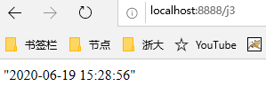

SpringMVC 什么是SpirngMVC？ 简单定义
Spring MVC是SpringFrameWork的一部分，是基于Java实现的MVC的轻量级web框架。
基于Servlet API构建的原始Web框架，从一开始就已包含在Spring框架中
围绕一个中心的DispatcherServlet设计的，它将请求发送给处理程序，具有可配置的处理程序映射、视图解析、区域设置、时区和主题解析以及对上载文件的支持。
默认处理程序基于@Controller和@RequestMapping注解
将请求发送给控制器，并提供其他有助于web应用程序开发的功能。然而，Spring的DispatcherServlet所做的不仅仅是这些。它与Spring IoC容器完全集成，因此允许您使用Spring的所有其他特性。
通过策略接口，Spring 框架是高度可配置的，而且包含多种视图技术，例如 [JavaServer Pages](https://baike.baidu.com/item/JavaServer Pages)（JSP）技术、Velocity 、Tiles 、iText 和POI。Spring MVC 框架并不知道使用的视图，所以不会强迫开发者只使用 JSP 技术。Spring MVC 分离了控制器、模型对象、过滤器以及处理程序对象的角色，这种分离让它们更容易进行定制。
——百度百科
官方文档：https://docs.spring.io/spring/docs/4.3.27.RELEASE/spring-framework-reference/htmlsingle/#spring-web（打开快）
最新版文档（截止20200618）：https://docs.spring.io/spring/docs/5.2.7.RELEASE/spring-framework-reference/web.html#spring-web
为什么要学SpringMVC?
轻量级，简单易学
高效，基于请求响应的MVC框架
无缝结合Spring
约定大于配置
功能强大：RESTful、数据验证、格式化、本地化、主题
简单灵活
SpringWebMVC中Dispatcherservlet的请求处理工作流
Servlet HelloSpringMVC 1、新建一个模块，添加web支持
放在项目上，右键增加模块
2、确定导入了SpringMVC的依赖
3、配置web.xml，注册DispatchServlet
tomcat7 web.xml头文件（版本号是3.0，tomcat 9版本号是4.0，tomcat 8版本号是3.1）
1 2 3 4 5 6 7 8 <?xml version="1.0" encoding="UTF-8"?> <web-app xmlns ="http://java.sun.com/xml/ns/javaee" xmlns:xsi ="http://www.w3.org/2001/XMLSchema-instance" xsi:schemaLocation ="http://java.sun.com/xml/ns/javaee http://java.sun.com/xml/ns/javaee/web-app_3_0.xsd" version ="3.0" > </web-app >
4、编写SpringMVC配置文件。名称：springmvc-servlet.xml：【servletname】-servlet.xml（官方规定的命名方式）
1 2 3 4 5 6 7 <?xml version="1.0" encoding="UTF-8"?> <beans xmlns ="http://www.springframework.org/schema/beans" xmlns:xsi ="http://www.w3.org/2001/XMLSchema-instance" xsi:schemaLocation ="http://www.springframework.org/schema/beans http://www.springframework.org/schema/beans/spring-beans.xsd" ></beans >
5、添加处理映射器
1 <bean class ="org.springframework.web.servlet.handler.BeanNameUrlHandlerMapping" />
6、添加处理适配器
1 <bean class ="org.springframework.web.servlet.mvc.SimpleControllerHandlerAdapter" />
7、添加视图解析器
1 2 3 4 5 6 7 <bean class ="org.springframework.web.servlet.view.InternalResourceViewResolver" id ="internalResourceViewResolver" > <property name ="prefix" value ="/WEB-INF/jsp/" /> <property name ="suffix" value =".jsp" /> </bean >
8、编写业务操作controller，要么实现Controller接口，要么增加注解；需要返回一个ModleAndView，装数据，封视图
1 2 3 4 5 6 7 8 9 10 11 12 13 14 15 16 17 18 19 20 21 22 23 24 25 package com.tcmyxc.controller;import org.springframework.web.servlet.ModelAndView;import org.springframework.web.servlet.mvc.Controller;import javax.servlet.http.HttpServletRequest;import javax.servlet.http.HttpServletResponse;public class HelloController implements Controller @Override public ModelAndView handleRequest (HttpServletRequest httpServletRequest, HttpServletResponse httpServletResponse) throws Exception ModelAndView modelAndView = new ModelAndView(); modelAndView.addObject("msg" , "HelloSpringMVC" ); modelAndView.setViewName("hello" ); return modelAndView; } }
9、将自己的类交给SpingIOC容器，注册bean
1 2 <bean id ="/hello" class ="com.tcmyxc.controller.HelloController" />
10、写需要跳转的JSP页面，显示数据
1 2 3 4 5 6 7 8 9 10 <%@ page contentType="text/html;charset=UTF-8" language="java" %> <html> <head> <title>Title</title> </head> <body> <h1>${msg}</h1> </body> </html>
11、配置tomcat，测试
可能出现的问题：访问404，排查步骤：
查看控制台输出是不是少了什么jar包
如果不缺jar包，在IEDA的项目发布中，添加lib依赖
重启tomcat
简要分析执行流程
DispatcherServlet表示前置控制器，是整个SpringMVC的控制中心。用户发出请求，DispatcherServlet接收请求并拦截
小结
1、新建一个WEB项目
2、导入相关的jar包
3、编写web.xml，注册DispatcherServlet
4、编写springmvc配置文件
5、创建控制类，controller
6、完善前端视图和controller之间的对应
7、测试
controller springmvc-servlet.xml一般配置：1 2 3 4 5 6 7 8 9 10 11 12 13 14 15 16 17 18 19 20 21 22 23 24 25 26 27 28 29 30 <?xml version="1.0" encoding="UTF-8"?> <beans xmlns ="http://www.springframework.org/schema/beans" xmlns:xsi ="http://www.w3.org/2001/XMLSchema-instance" xmlns:context ="http://www.springframework.org/schema/context" xmlns:mvc ="http://www.springframework.org/schema/mvc" xsi:schemaLocation ="http://www.springframework.org/schema/beans http://www.springframework.org/schema/beans/spring-beans.xsd http://www.springframework.org/schema/context https://www.springframework.org/schema/context/spring-context.xsd http://www.springframework.org/schema/mvc https://www.springframework.org/schema/mvc/spring-mvc.xsd" > <context:component-scan base-package ="com.tcmyxc.controller" /> <mvc:default-servlet-handler /> <mvc:annotation-driven /> <bean class ="org.springframework.web.servlet.view.InternalResourceViewResolver" id ="internalResourceViewResolver" > <property name ="prefix" value ="/WEB-INF/jsp/" /> <property name ="suffix" value =".jsp" /> </bean > </beans >
实现Controller接口
不推荐使用，太麻烦，而且一个controller对应一个bean，太浪费
使用注解开发 RESTful风格 RESTFUL特点包括：
1、每一个URI代表1种资源；
2、客户端使用GET、POST、PUT、DELETE4个表示操作方式的动词对服务端资源进行操作：GET用来获取资源，POST用来新建资源（也可以用于更新资源），PUT用来更新资源，DELETE用来删除资源；
3、通过操作资源的表现形式来操作资源；
4、资源的表现形式是XML或者HTML；
5、客户端与服务端之间的交互在请求之间是无状态的，从客户端到服务端的每个请求都必须包含理解请求所必需的信息。
可以达到URL复用的功能
一般的形式：
1 2 3 4 5 6 7 8 9 @RequestMapping("/add") public String test (int a, int b, Model model) int res = a + b; model.addAttribute("msg" , "结果是：" + res); return "test" ; }
RESTful形式：
1 2 3 4 5 6 7 8 9 10 11 12 13 @GetMapping("/add2/{a}/{b}") public String test2 (@PathVariable int a, @PathVariable int b, Model model) int res = a + b; model.addAttribute("msg" , "结果是：" + res); return "test" ; }
@RequestMapping的几种简单形式：@GetMapping，@PostMapping，@PutMapping，@DeleteMapping
SpringMVC接收数据 前端后端参数名一样的情况 1 2 3 4 5 6 7 8 9 10 11 12 13 @RequestMapping("/t1") public String text (String name, Model model) System.out.println("前端参数为：" + name); model.addAttribute("msg" , name); return "test" ; }
前后端参数名不一样
1 2 3 4 5 6 7 8 9 10 11 @RequestMapping("/t2") public String test2 (@RequestParam("name") String userName, Model model) System.out.println("前端参数为：" + userName); model.addAttribute("msg" , userName); return "test" ; }
【中文乱码问题】
在web.xml配置一下就好
1 2 3 4 5 6 7 8 9 10 11 12 13 <filter > <filter-name > encoding</filter-name > <filter-class > org.springframework.web.filter.CharacterEncodingFilter</filter-class > <init-param > <param-name > encoding</param-name > <param-value > utf-8</param-value > </init-param > </filter > <filter-mapping > <filter-name > encoding</filter-name > <url-pattern > /</url-pattern > </filter-mapping >
如果还不行，把tomcat的server.xml文件修改一下：
1 2 3 4 <Connector port ="8888" protocol ="HTTP/1.1" connectionTimeout ="20000" redirectPort ="8443" URIEncoding ="UTF-8" />
但是，这种方式只对get方式提交有效，如果是post方式提交，你会发现，还是乱码！！！
终极解决方法：
自定义过滤器
1 2 3 4 5 6 7 8 9 10 11 12 13 14 15 16 17 18 19 20 21 22 23 24 25 26 27 28 29 30 31 32 33 34 35 36 37 38 39 40 41 42 43 44 45 46 47 48 49 50 51 52 53 54 55 56 57 58 59 60 61 62 63 64 65 66 67 68 69 70 71 72 73 74 75 76 77 78 79 80 81 82 83 84 85 86 87 88 89 90 91 92 93 94 95 96 97 98 99 100 101 102 103 104 105 106 107 108 109 110 111 112 113 114 115 package com.tcmyxc.controller;import java.util.Map;import javax.servlet.*;import javax.servlet.http.HttpServletRequest;import javax.servlet.http.HttpServletRequestWrapper;import javax.servlet.http.HttpServletResponse;import java.io.IOException;import java.io.UnsupportedEncodingException;public class GenericEncodingFilter implements Filter @Override public void destroy () } @Override public void doFilter (ServletRequest request, ServletResponse response, FilterChain chain) throws IOException, ServletException HttpServletResponse myResponse=(HttpServletResponse) response; myResponse.setContentType("text/html;charset=UTF-8" ); HttpServletRequest httpServletRequest = (HttpServletRequest) request; HttpServletRequest myrequest = new MyRequest(httpServletRequest); chain.doFilter(myrequest, response); } @Override public void init (FilterConfig filterConfig) throws ServletException } } class MyRequest extends HttpServletRequestWrapper private HttpServletRequest request; private boolean hasEncode; public MyRequest (HttpServletRequest request) super (request); this .request = request; } @Override public Map getParameterMap () String method = request.getMethod(); if (method.equalsIgnoreCase("post" )) { try { request.setCharacterEncoding("utf-8" ); return request.getParameterMap(); } catch (UnsupportedEncodingException e) { e.printStackTrace(); } } else if (method.equalsIgnoreCase("get" )) { Map<String, String[]> parameterMap = request.getParameterMap(); if (!hasEncode) { for (String parameterName : parameterMap.keySet()) { String[] values = parameterMap.get(parameterName); if (values != null ) { for (int i = 0 ; i < values.length; i++) { try { values[i] = new String(values[i] .getBytes("ISO-8859-1" ), "utf-8" ); } catch (UnsupportedEncodingException e) { e.printStackTrace(); } } } } hasEncode = true ; } return parameterMap; } return super .getParameterMap(); } @Override public String getParameter (String name) Map<String, String[]> parameterMap = getParameterMap(); String[] values = parameterMap.get(name); if (values == null ) { return null ; } return values[0 ]; } @Override public String[] getParameterValues(String name) { Map<String, String[]> parameterMap = getParameterMap(); String[] values = parameterMap.get(name); return values; } }
在web.xml文件中配置过滤器
1 2 3 4 5 6 7 8 9 10 11 12 13 14 15 16 17 18 19 <filter > <filter-name > encoding</filter-name > <filter-class > com.tcmyxc.controller.GenericEncodingFilter</filter-class > <init-param > <param-name > encoding</param-name > <param-value > utf-8</param-value > </init-param > </filter > <filter-mapping > <filter-name > encoding</filter-name > <url-pattern > /*</url-pattern > </filter-mapping >
前端接收的是一个对象 1 2 3 4 5 6 7 8 9 10 11 12 13 14 @GetMapping("/t3") public String test3 (User user) System.out.println("前端参数为：" + user); return "test" ; }
前后端分离 后端部署后端，提供接口
前端独立部署，负责渲染页面
后端返回json数据
Jackson 1、导入依赖
1 2 3 4 5 6 <dependency > <groupId > com.fasterxml.jackson.core</groupId > <artifactId > jackson-databind</artifactId > <version > 2.11.0</version > </dependency >
2、测试
1 2 3 4 5 6 7 8 9 10 11 12 13 14 15 16 17 @Controller public class UserController @RequestMapping("/j1") @ResponseBody public String json1 () throws JsonProcessingException User user = new User(1 , "徐文祥" , 24 ); ObjectMapper mapper = new ObjectMapper(); String str = mapper.writeValueAsString(user); return str; } }
测试截图：
【如果出现中文乱码】
1、原始思路
1 @RequestMapping(path = "/j1", produces = "application/json;charset=utf-8")
2、SpringMVC的做法
在spingmvc-servlet.xml配置文件中添加Jackson的有关配置：
1 2 3 4 5 6 7 8 9 10 11 12 13 14 15 <mvc:annotation-driven > <mvc:message-converters register-defaults ="true" > <bean class ="org.springframework.http.converter.StringHttpMessageConverter" > <constructor-arg value ="UTF-8" /> </bean > <bean class ="org.springframework.http.converter.json.MappingJackson2HttpMessageConverter" > <property name ="objectMapper" > <bean class ="org.springframework.http.converter.json.Jackson2ObjectMapperFactoryBean" > <property name ="failOnEmptyBeans" value ="false" /> </bean > </property > </bean > </mvc:message-converters > </mvc:annotation-driven >
一些技巧：
显示时间 原始方式——自定义时间格式 1 2 3 4 5 6 7 8 9 10 11 12 13 14 15 16 @RequestMapping(path = "/j3") public String json3 () throws JsonProcessingException ObjectMapper mapper = new ObjectMapper(); Date date = new Date(); SimpleDateFormat sdf = new SimpleDateFormat("yyyy-MM-dd HH:mm:ss" ); String str = mapper.writeValueAsString(sdf.format(date)); return str; }

Jackson方式 1 2 3 4 5 6 7 8 9 10 11 12 13 14 15 16 17 18 19 20 21 @RequestMapping(path = "/j3") public String json3 () throws JsonProcessingException ObjectMapper mapper = new ObjectMapper(); mapper.configure(SerializationFeature.WRITE_DATE_KEYS_AS_TIMESTAMPS, false ); Date date = new Date(); SimpleDateFormat sdf = new SimpleDateFormat("yyyy-MM-dd HH:mm:ss" ); mapper.setDateFormat(sdf); String str = mapper.writeValueAsString(date); return str; }
效果相同的
封装工具类 1 2 3 4 5 6 7 8 9 10 11 12 13 14 15 16 17 18 19 20 21 22 23 package com.tcmyxc.util;import com.fasterxml.jackson.core.JsonProcessingException;import com.fasterxml.jackson.databind.ObjectMapper;import com.fasterxml.jackson.databind.SerializationFeature;import java.text.SimpleDateFormat;public class JsonUtil public static String getJson (Object object) throws JsonProcessingException return getJson(object, "yyyy-MM-dd HH:mm:ss" ); } public static String getJson (Object object, String dateFormat) throws JsonProcessingException ObjectMapper mapper = new ObjectMapper(); mapper.configure(SerializationFeature.WRITE_DATE_KEYS_AS_TIMESTAMPS, false ); SimpleDateFormat sdf = new SimpleDateFormat(dateFormat); mapper.setDateFormat(sdf); return mapper.writeValueAsString(object); } }
调用：
1 2 3 4 5 6 7 8 9 10 11 12 13 14 15 16 17 18 19 @RequestMapping(path = "/j2") public String json2 () throws JsonProcessingException User user1 = new User(1 , "徐文祥" , 24 ); User user2 = new User(2 , "徐文祥" , 24 ); User user3 = new User(3 , "徐文祥" , 24 ); List<User> userList = new ArrayList<User>(); userList.add(user1); userList.add(user2); userList.add(user3); return JsonUtil.getJson(userList); } @RequestMapping(path = "/j3") public String json3 () throws JsonProcessingException return JsonUtil.getJson(new Date()); }
了解思想即可，注意方法重载是可以互相调用的。
fastjson
一个 Java 库，可以将 Java 对象转换为 JSON 格式，也可以将 JSON 字符串转换为 Java 对象。
toJSONString方法即可将对象转换成 JSON 字符串
parseObject 方法则反过来将 JSON 字符串转换成对象
1 2 3 4 5 6 <dependency > <groupId > com.alibaba</groupId > <artifactId > fastjson</artifactId > <version > 1.2.68</version > </dependency >
1 2 3 4 5 6 7 8 9 10 11 12 13 14 15 16 @RequestMapping(path = "/j4") public String json4 () throws JsonProcessingException User user1 = new User(1 , "徐文祥" , 24 ); User user2 = new User(2 , "徐文祥" , 24 ); User user3 = new User(3 , "徐文祥" , 24 ); List<User> userList = new ArrayList<User>(); userList.add(user1); userList.add(user2); userList.add(user3); String string = JSON.toJSONString(userList); return string; }
公司让用哪个就用那个
SSM整合 前期准备 数据库 1 2 3 4 5 6 7 8 9 10 11 12 13 14 CREATE DATABASE ssmbuild; USE ssmbuild; CREATE TABLE `books`( `bookID` INT NOT NULL AUTO_INCREMENT COMMENT '书id', `bookName` VARCHAR(100) NOT NULL COMMENT '书名', `bookCounts` INT NOT NULL COMMENT '数量', `detail` VARCHAR(200) NOT NULL COMMENT '描述', KEY `bookID`(`bookID`) )ENGINE=INNODB DEFAULT CHARSET=utf8; INSERT INTO `books`(`bookID`,`bookName`,`bookCounts`,`detail`)VALUES (1,'Java',1,'从入门到放弃'), (2,'MySQL',10,'从删库到跑路'), (3,'Linux',5,'从进门到进牢');
新建一个maven项目 【注意】c3p0连接池警告解决方法：
1 2 3 4 5 6 7 8 9 10 11 12 13 14 15 16 17 18 19 20 21 22 <bean id ="dataSource" class ="com.mchange.v2.c3p0.ComboPooledDataSource" > <property name ="driverClass" value ="${jdbc.driver}" /> <property name ="jdbcUrl" value ="${jdbc.url}" /> <property name ="user" value ="${jdbc.username}" /> <property name ="password" value ="${jdbc.password}" /> <property name ="maxPoolSize" value ="30" /> <property name ="minPoolSize" value ="10" /> <property name ="initialPoolSize" value ="10" /> <property name ="autoCommitOnClose" value ="false" /> <property name ="checkoutTimeout" value ="10000" /> <property name ="acquireRetryAttempts" value ="2" /> </bean >